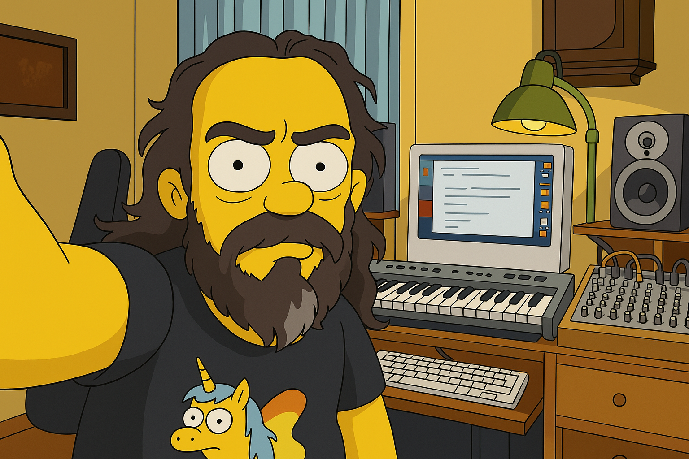
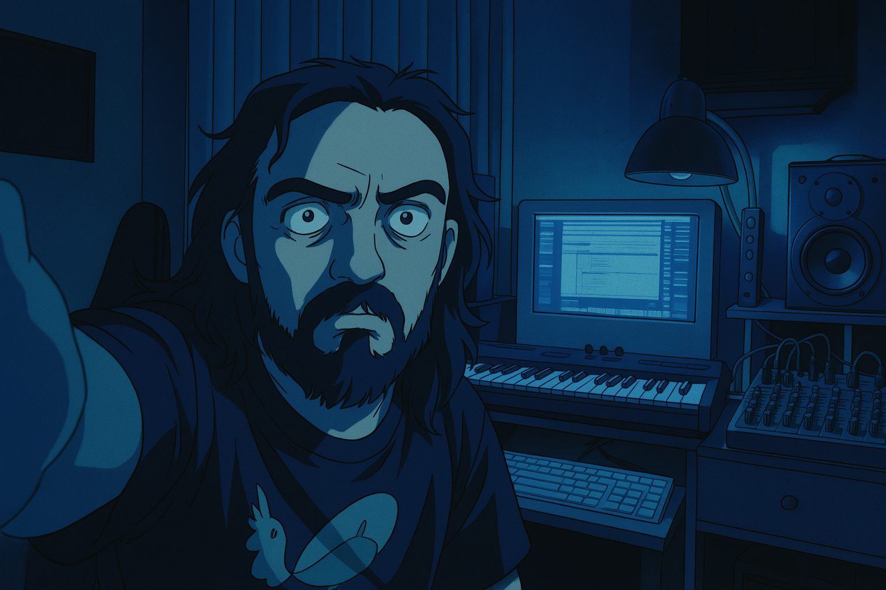
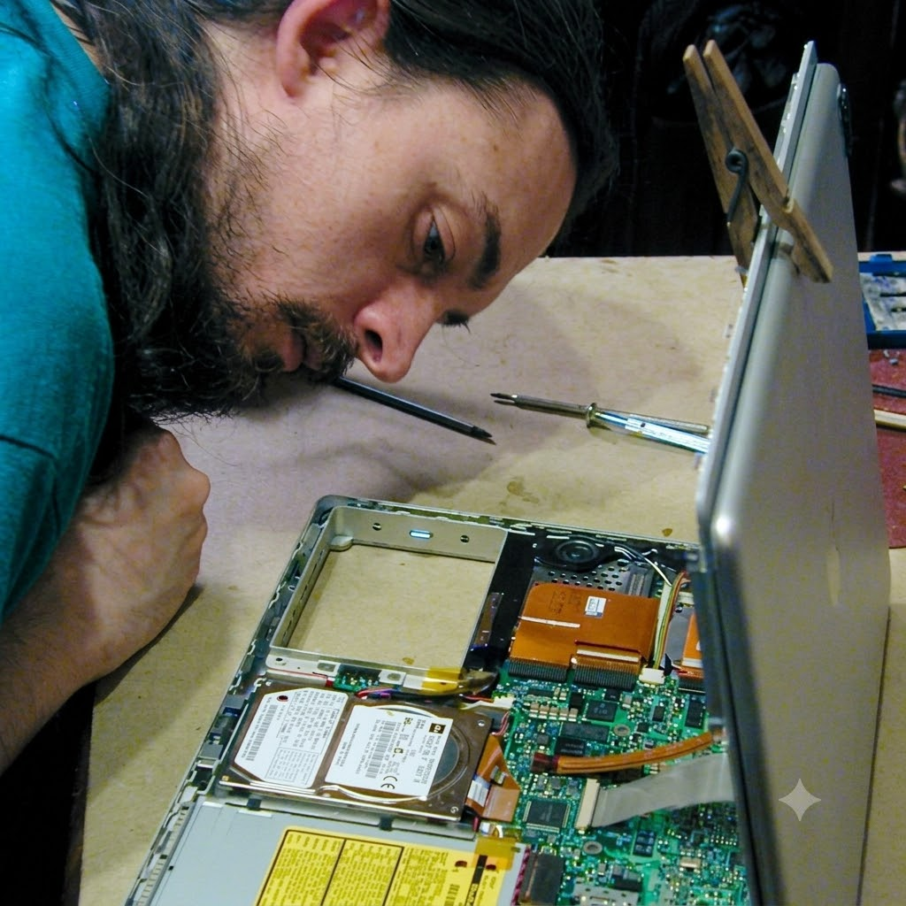

DAY MODEDI GIORNO
Il lato solare: riunioni, pixel perfetti, pixel no… e la voglia di risolvere il problema di tutti. Un po' Simpson: giallo, ironico, di Springfield ma con la testa tra i css.
// sistema: morpe // online dal 1996 //
web developer
Grafico di formazione, sviluppatore per vocazione, producer audio/video per passione. Costruisco il ponte tra design e codice — e quando serve, ci aggiungo il suono.
// 01 :: chi sono
// avatar storico
l'epoca del primo film
di South Park (1999)
> il nucleo
Marco Fabre — nato l'8 gennaio 1977 a Firenze. Grafico di formazione, mi sono avvicinato con passione allo sviluppo web da autodidatta con l'arrivo di Internet, durante la crescita dei blog e dei CMS.
Oggi: web development, grafica e produzione audio/video. In passato ho anche insegnato fotoritocco a pellettieri e fotografi.
Approccio i progetti con pensiero critico e pragmatico, bilanciando esigenze tecniche e grafiche: spesso il mio ruolo è fare da ponte tra sviluppo e design. O tra il cliente e la macchina.
// 02 :: dualità
La stessa persona, due stati d'animo: giallo Simpson di giorno, Ghost in the Shell di notte.

DAY MODEIl lato solare: riunioni, pixel perfetti, pixel no… e la voglia di risolvere il problema di tutti. Un po' Simpson: giallo, ironico, di Springfield ma con la testa tra i css.

NIGHT MODEIl lato ghost: neon, pioggia e riflessi. Quando tutto tace, la testa viaggia tra reti neurali, sci-fi e il rumore delle città che non dormono mai.

// 03 :: le radici
Circa 2008: upgrade dell'HDD su un MacBook Pro. Nessuna foto patinata, uno scatto casuale — l'originale l'ho perso, ma questo racconta tutto.
Prima di sviluppare siti, riparavo hardware. Prima di masterizzare brani, smontavo impianti audio. La logica è la stessa: capire come funziona, e farlo funzionare meglio.
$ sudo chmod +x morpe && sudo morpe --fix-it
→ output: problema risolto, con soddisfazione.
// 04 :: esperienze
grafico · UI/UX · developer per strumenti basati su AI
2026 — oggi
grafica & video editor — video e presentazioni aziendali
2025
grafico & web developer — WordPress, Angular, React, testing
2014 — 2024
contratto indeterminato · legge 68/99
grafico & web developer — siti WordPress
2012 — 2014
grafico multimediale — presentazioni e contenuti video da remoto
2025
addetto all'aula informatica — supporto a studenti e servizi
2009 — 2012
// 05 :: progetti
GUI per gestire e alleggerire i plugin audio su macOS per Logic. Vue 2.6 → React 17.
→ github.com/morpe/Neno
GUI per loggare l'assunzione di farmaci e monitorarne l'efficacia nel tempo. Angular 9.
Post-produzione audio, mix e mastering per cortometraggi e colonne sonore.
2021 · Nicola Zanobi
Post-produzione audio e musica. Un dramma psicologico sulla prosopagnosia.
[home page]2020 · Pj Gambioli
Post-produzione audio, mix e mastering. Il sequel di Mamme Fuori Mercato.
[trailer]2019 · Pj Gambioli
Post-produzione audio, mix e mastering. Vincitore al Calcutta International Cult Film Festival.
[trailer]Colonne sonore e sigle: collaborazione con la compositrice Serena Giannini (2005-2023).
// 06 :: abilità
Photoshop · Illustrator · InDesign · XPRES · Affinity Studio
Logic Pro · Reason · iZotope RX · Final Cut Pro · TouchDesigner
HTML · CSS · Less · Sass · JavaScript · PHP · Rails
jQuery · VueJS · Angular · React · MySQL · SQL · JSON
// 07 :: contatti
Disponibile per lavori da remoto, ibridi o in sede (facilmente raggiungibile con i mezzi pubblici).
Autorizzo il trattamento dei dati personali contenuti nel presente curriculum vitae in base all'art. 13 del D. Lgs. 196/2003 e all'art. 13 GDPR 679/16.